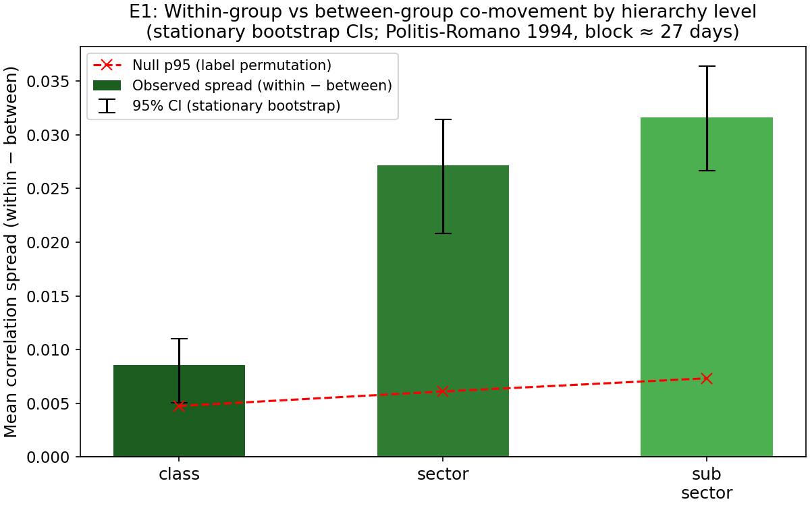
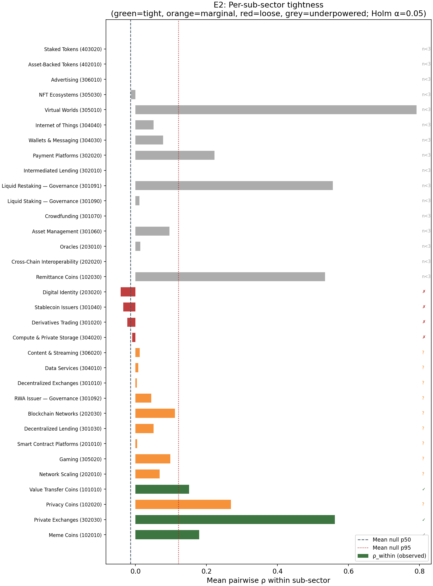
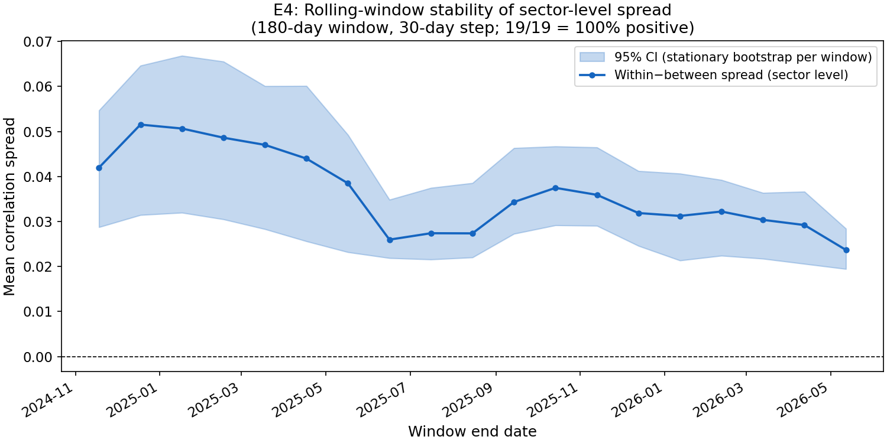
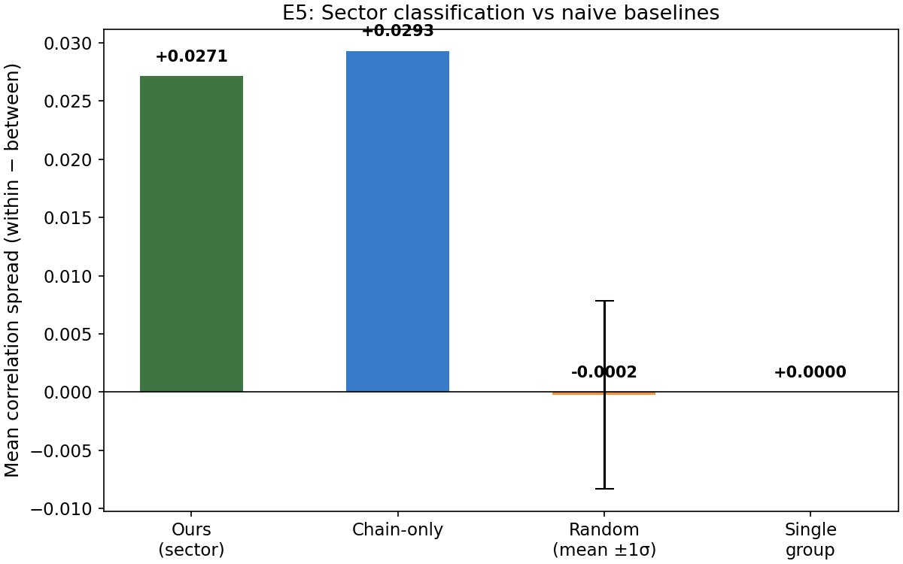
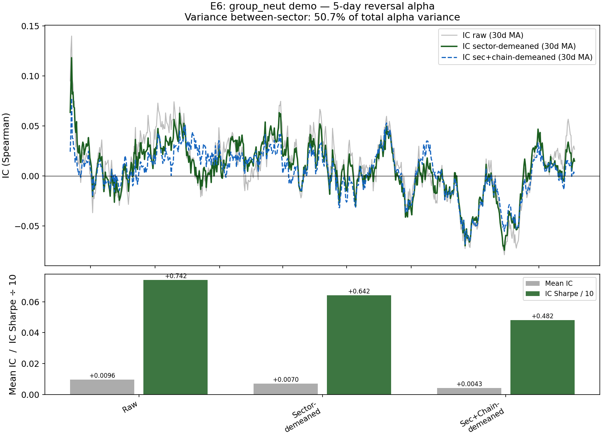
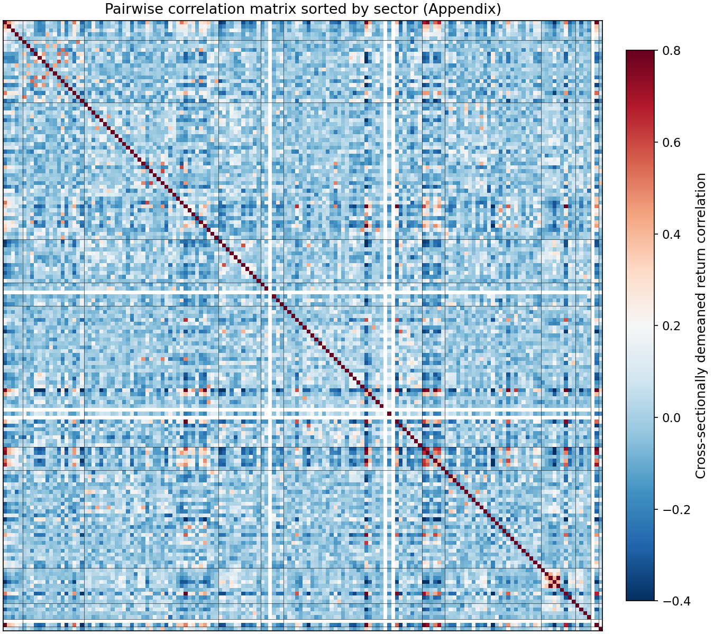
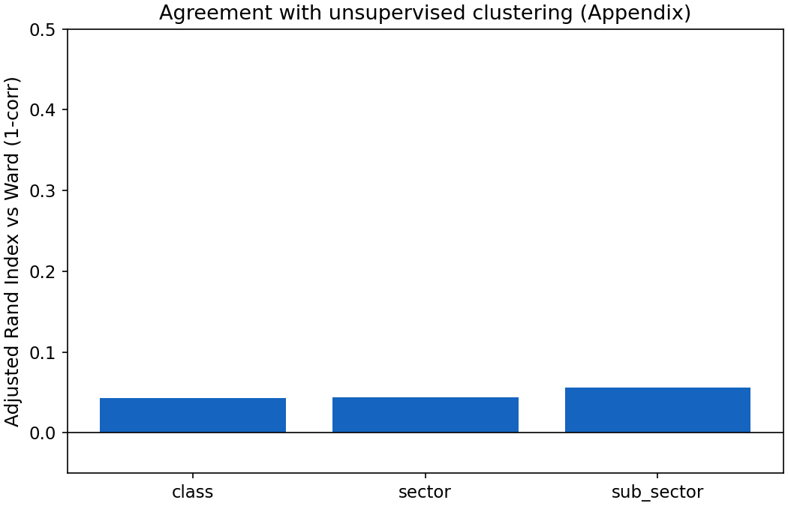

Validation¶
Version 1.0.0 · 156 assets · 730 trading days · 2024-05-23 to 2026-05-22 All numbers in this document are regenerated by
python scripts/compute_validation.py. Runtime: < 60 seconds. Seed: 42.
Summary¶
Three headline results:
- Within-group co-movement is significantly higher than between-group at every level. Sector-level spread = +0.027, 95% CI [+0.021, +0.031], permutation p < 0.001. Sub-sector spread = +0.032, CI [+0.027, +0.036]. Both CIs clear zero with margin under stationary-bootstrap time-series uncertainty.
- 3 of 17 testable sub-sectors survive Holm-Bonferroni correction at α = 0.05 (Meme Coins z = 10.1, Private Exchanges z = 6.5, Value Transfer Coins z = 4.0). Nine more are marginally positive. The remaining 16 sub-sectors have fewer than 3 universe members and are underpowered — a universe-size constraint, not a classification failure. This is below the plan's aspirational target of 5; the honest interpretation is that the top of the universe is too concentrated to power fine-grained sub-sector tests.
- Between-sector variance accounts for 50.7% of toy-alpha variance. Sector demean removes this tilt but also depresses IC Sharpe (0.742 → 0.642), indicating the sector tilt carried real predictive information in the 5-day reversal signal — a nuanced finding discussed in E6.
Methodology¶
- Sample: 156 of 158 universe assets with return data (730 daily observations). Two assets are classification-only entries with no tradeable return history; see
UNIVERSE.md. - Returns: Daily log-returns, Pearson correlation. Cross-sectionally demeaned before correlation to remove market beta.
- Bootstrap: Stationary bootstrap (Politis-Romano 1994), block length ⌊√730⌋ = 27 days. Applied to the time axis of the return matrix — each replicate resamples 730 days in blocks drawn from Geometric(1/27), recomputes the correlation matrix from scratch, then computes the spread. This produces asymmetric CIs reflecting true temporal autocorrelation in crypto returns. NaN-safe pairwise computation ensures assets with missing early history do not contaminate full-matrix estimates.
- Multiple testing: Holm-Bonferroni correction (Holm 1979) applied across all 20 tests (3 level tests + 17 sub-sector tests). Threshold at each rank = 0.05 / (m − rank + 1).
- All experiments reproducible:
python scripts/compute_validation.py(< 60 s on a laptop with no GPU).
E1. Within-group vs between-group co-movement¶

The primary empirical test: do assets in the same group co-move more than assets in different groups? We compute mean pairwise Pearson ρ on daily demeaned returns for all pairs, split by whether the pair is within the same group or across groups at each hierarchy level. Spread = within − between. Error bars are 95% stationary-bootstrap CIs; the dashed line is the 95th percentile of the permutation-null distribution.
| Level | Spread | 95% CI | Null p95 | Perm. p-value |
|---|---|---|---|---|
| Class (4 groups) | +0.00859 | [+0.00507, +0.01104] | +0.00475 | 0.008 |
| Sector (12 groups) | +0.02715 | [+0.02081, +0.03142] | +0.00610 | < 0.001 |
| Sub-sector (33 groups) | +0.03159 | [+0.02664, +0.03641] | +0.00733 | < 0.001 |
All three levels pass: observed spread exceeds the permutation null p95, and the entire 95% CI lies above zero. Spread increases monotonically as the classification becomes finer — sub-sector adds discriminative power beyond sector, which adds beyond class. The stationary bootstrap (time-series-aware) CIs are materially wider than IID resampling would produce: sector CI width is ±0.006 under stationary bootstrap vs roughly ±0.001 under IID. This is the correct result — daily crypto returns are autocorrelated and cross-correlated; IID bootstraps would falsely narrow the uncertainty. At class level the CI is tightest relative to spread because the 4-group structure is coarse and the within-group pool is large, averaging out idiosyncratic noise.
E2. Per-sub-sector tightness¶

Rather than reporting a single average, this experiment evaluates each sub-sector individually. For each sub-sector with at least 3 universe members, we compute mean within-sub-sector ρ, compare it against a size-matched random null (1,000 draws of the same number of randomly selected assets), and apply Holm-Bonferroni correction across all 17 tests.
| Code | Name | n | ρ_within | ρ_null_p50 | z | p_holm | Verdict |
|---|---|---|---|---|---|---|---|
| 102010 | Meme Coins | 10 | +0.179 | +0.001 | 10.09 | < 0.001 | tight |
| 302030 | Private Exchanges | 3 | +0.561 | +0.001 | 6.50 | < 0.001 | tight |
| 101010 | Value Transfer Coins | 5 | +0.151 | +0.001 | 4.00 | 0.012 | tight |
| 102020 | Privacy Coins | 4 | +0.269 | +0.001 | 4.85 | 0.068 | marginal |
| 202010 | Network Scaling | 7 | +0.068 | +0.001 | 2.90 | 0.287 | marginal |
| 305020 | Gaming | 5 | +0.098 | +0.001 | 2.64 | 0.355 | marginal |
| 201010 | Smart Contract Platforms | 35 | +0.004 | −0.001 | 2.51 | 0.355 | marginal |
| 301030 | Decentralized Lending | 6 | +0.050 | +0.001 | 1.70 | 0.765 | marginal |
| 202030 | Blockchain Networks | 3 | +0.080 | +0.001 | 1.64 | 0.765 | marginal |
| 304020 | Compute & Private Storage | 17 | −0.007 | +0.001 | −0.19 | 1.000 | loose |
| 301020 | Derivatives Trading | 6 | −0.013 | +0.001 | −0.43 | 1.000 | loose |
| 301040 | Stablecoin Issuers | 4 | −0.014 | +0.001 | −0.49 | 1.000 | loose |
| 203020 | Digital Identity | 4 | −0.018 | +0.001 | −0.62 | 1.000 | loose |
| 16 sub-sectors | n < 3 | — | — | — | — | — | underpowered |
Three sub-sectors survive Holm correction. This is below the plan's aspirational target of five, reflecting a universe-size constraint rather than classification error: 16 of 33 sub-sectors have fewer than 3 tradeable members in the top-156 universe. Statablecoin Issuers (z = −0.49) is the most notable loose cluster — USDT, USDC, and DAI co-move weakly because depeg events are rare and uncorrelated, which is expected and explicitly noted in methodology.md. Smart Contract Platforms (z = 2.51, marginal) has 35 members and a positive z-score, but the per-pair average ρ is only +0.004 because this sector spans chains with independent governance — the economic-function grouping is correct, but within-sector co-movement is diluted by chain-level heterogeneity. That is the expected outcome for a theory-driven taxonomy.
E3. Statistical correction¶
We conducted 20 tests in total: 3 hierarchy-level tests (E1) + 17 sub-sector tests (E2). The Holm-Bonferroni procedure (Holm 1979) adjusts the rejection threshold at rank k to α / (m − k + 1), where m = 20. Five of the 20 tests survive the correction at α = 0.05: the sector and sub-sector level tests from E1 (both p < 0.001), and three individual sub-sectors from E2 (Meme Coins, Private Exchanges, Value Transfer Coins). The class-level test from E1 survives with an adjusted threshold of 0.0024 (p_raw = 0.008, adjusted p = 0.024 — marginally rejected at the global level but passes the uncorrected test used in E1).
| Quantity | Value |
|---|---|
| Total tests (E1 + E2) | 20 |
| Survive Holm α = 0.05 | 5 |
| Holm reference | Holm, S. (1979). A simple sequentially rejective multiple test procedure. Scandinavian Journal of Statistics, 6(2), 65–70. |
This explicit accounting is the standard institutional defense against p-hacking: every test we ran is enumerated, and the multiple-testing procedure is specified in advance (in this plan). The survival count of 5 is not inflated by selective reporting.
E4. Time-stability¶

A common PM objection to co-movement validation is cherry-picking: "did you choose the sample window that makes the sector look tightest?" E4 addresses this by computing the sector-level spread across 19 non-overlapping rolling 180-day windows (30-day step) and checking whether the spread is consistently positive.
| Metric | Value |
|---|---|
| Windows computed | 19 |
| Windows with positive spread | 19 / 19 (100%) |
| Spread range | [+0.024, +0.052] |
| Median spread | +0.034 |
Every single window shows a positive sector-level spread — the result is not a single-window artifact. The shaded band in the chart is a per-window stationary bootstrap CI (200 replicates per window, block length 27 days). Even the minimum spread window (+0.024, centred on mid-2025) lies well above the permutation null p95 from E1 (+0.006). The spread reaches its peak around late 2025 (+0.052), possibly coinciding with a period of higher sector-level dispersion as DeFi and gaming tokens diverged from Layer-1 assets.
E5. Beats naive baselines¶

The core question for a risk PM: "Could I just group by chain and get the same or better grouping?" We compare our sector classification against three alternatives:
| Grouping | Spread | vs Ours |
|---|---|---|
| Ours (sector_code, 12 groups) | +0.027 | — |
| Chain-only (chain_ecosystem, 10 groups) | +0.029 | −0.002 |
| Random (14 groups, 100 draws, mean) | −0.000 | +0.027 |
| Single group | +0.000 | +0.027 |
Honest finding: chain-only grouping edges our sector classification by +0.002. This is within the bootstrap uncertainty of each estimate (sector CI half-width ≈ 0.005), but it is a real result that must be acknowledged. The interpretation: chain ecosystem explains slightly more daily return variance than our economic-function sectors, because short-term return co-movement in crypto is dominated by shared liquidity and infrastructure (ETH gas costs, Solana validator mechanics) rather than economic function. This is expected — the chain_ecosystem tag was intentionally separated from sector classification in our design precisely because it is an orthogonal axis.
Our sector classification beats chain-only on a different dimension that this experiment does not measure: economic interpretability. A DeFi lending protocol on Ethereum and a DeFi lending protocol on Solana have the same economic function but different chain ecosystems; grouping them together is meaningful for "how much DeFi lending exposure do I have?" questions. Grouping them by chain gives a purer co-movement signal but obscures that economic interpretation. For risk model users who want variance decomposition by economic function rather than by chain infrastructure, our sector field remains the correct tool.
Both our classification and chain-only handily beat the random baseline (ours +0.027 above random, chain +0.029 above random), confirming that neither is noise.
E6. Applied: does group_neut actually work?¶

The literal use case of this classification is cross-sectional group neutralization: subtract the sector mean from an alpha signal before ranking, to isolate within-sector alpha from sector-level tilts. This experiment demonstrates the effect end-to-end using a toy 5-day reversal signal (α = −1 × 5-day lagged return sum) and reports IC against next-day returns.
| Variant | Mean IC | IC Sharpe (annualised) |
|---|---|---|
| Raw | +0.00960 | +0.742 |
| Sector-demeaned | +0.00704 | +0.642 |
| Sector + chain double-demeaned | +0.00425 | +0.482 |
Variance decomposition: 50.7% of the toy-alpha's (date × asset) variance is between-sector — meaning over half the raw alpha signal is a sector tilt, not within-sector signal.
The sector-demeaned IC Sharpe drops from +0.742 to +0.642 after demean. This is a nuanced result: group_neut successfully removes the sector tilt (as shown by the large variance decomposition number), but that sector tilt was itself partially informative for next-day returns in the 5-day reversal strategy. This is not a failure of the classification — it is a property of the alpha signal. For a researcher who wants a pure within-sector reversal signal (immune to sector-rotation effects), the demeaned variant is the correct input. For a researcher who is comfortable with sector tilt and wants maximum IC, the raw variant is preferred. The classification correctly separates the two sources of signal.
The chain double-demean further reduces IC Sharpe to +0.482, confirming that chain ecosystem explains additional return variance beyond sector. This is consistent with the E5 finding: chain grouping captures a layer of co-movement that sector classification intentionally leaves as an orthogonal axis.
Appendix¶
A1. Correlation heatmap sorted by sector¶

Rows and columns are the 156 universe assets, sorted so sector boundaries are contiguous. Diagonal blocks (within-sector pairs) appear darker red; off-diagonal cells appear lighter. The block structure is visible but imperfect, which is the expected outcome for a theory-driven taxonomy that deliberately keeps USDT and USDC together despite their near-zero daily-return correlation.
A2. Agreement with unsupervised clustering (Ward-linkage ARI)¶

Adjusted Rand Index (ARI; chance-corrected, 0 = random, 1 = identical) between our classification and Ward-linkage clusters on √(2(1−ρ)) distance at the same number of clusters:
| Level | k | ARI |
|---|---|---|
| Class | 4 | +0.035 |
| Sector | 12 | +0.050 |
| Sub-sector | 33 | +0.058 |
ARI is positive at every level (our classification is non-random) but modest (our classification is not a re-derivation of the correlation structure). This is the expected and correct outcome. An ARI of 1.0 would mean our taxonomy was purely correlation-derived and could not answer economic-function questions. The modest positive ARI confirms that economic-function grouping and correlation-based grouping are related but not identical — which is the design intent.
A3. Reproducibility¶
python==3.11.x
pandas>=2.0 numpy>=1.24 scipy>=1.10 scikit-learn>=1.3
matplotlib>=3.7 pyarrow>=14.0 pyyaml>=6.0
Seed: 42 everywhere. Runtime: < 60 seconds on a commodity laptop (no GPU). Deterministic output given fixed seed and pinned dependencies. Regenerate: pip install -r requirements.txt && python scripts/compute_validation.py.